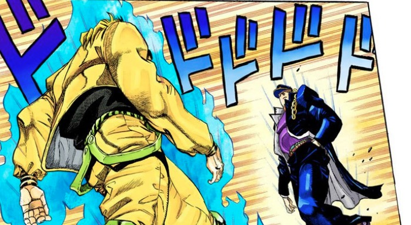
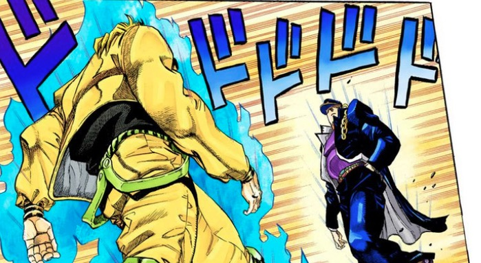

JoJo's Bizarre Adventure (яп. ジョジョの奇妙な冒険 Дзёдзё но кимё:на бо:кэн, «Невероятные приключения ДжоДжо») — серия выпусков манги, автором и иллюстратором которой является Хирохико Араки. С 1987 по 2004 год серия публиковалась в журнале Weekly Shonen Jump, затем выпуск глав был перенесён в ежемесячный сэйнэн-журнал Ultra Jump. JoJo’s Bizarre Adventure является второй в числе крупнейших серий манги издательства Shueisha и включает в себя 131 том, уступая лишь Kochikame, состоящей из 200 томов. История восьми частей манги разворачивается вокруг приключений Джонатана Джостара и его потомков: каждая часть представляет читателю отдельную историю и нового героя, способного применять в бою сверхъестественные силы. На основе манги были созданы 13-серийная OVA (1993—2002), полнометражный анимационный фильм (2007), полнометражный игровой фильм (2017) и пять сезонов сериала (2012—2020) производства студии David Production. Кроме того, по мотивам JoJo были изданы книги в формате ранобэ и созданы компьютерные игры. Критики в основном положительно оценили JoJo’s Bizarre Adventure как франшизу в целом. В частности, ими были отмечены самобытный дизайн и сюжетное развитие манги, хорошая проработка окружающего мира и сеттинга. По мнению обозревателей, боевые сцены также выгодно выделялись тем, что победу протагонистов предрешала не сила противника, а способность продумывать правильную стратегию, но, с другой стороны, сражения могли отличаться излишней жестокостью. Каждая отдельная часть серии обладает своими преимуществами и недостатками: первые две части манги были признаны самыми слабыми во франшизе; в поздних же работах критики заметили отход Араки от концепции «сражения добра и зла» в сторону изучения психологии, внутренних конфликтов персонажей и этических проблем . С начала выпуска манги на территории Японии было продано более 80 миллионов её танкобонов. По результатам нескольких опросов JoJo’s Bizarre Adventure была признана одной из лучших манг. Помимо этого, работы Хирохико Араки, созданные по вселенной JoJo, выставлялись в Лувре в Париже. Кроме того, мангака сотрудничал с итальянским домом моды Gucci, где представлял изображения персонажей из вселенной Jojo на тематической экспозиции.
 
